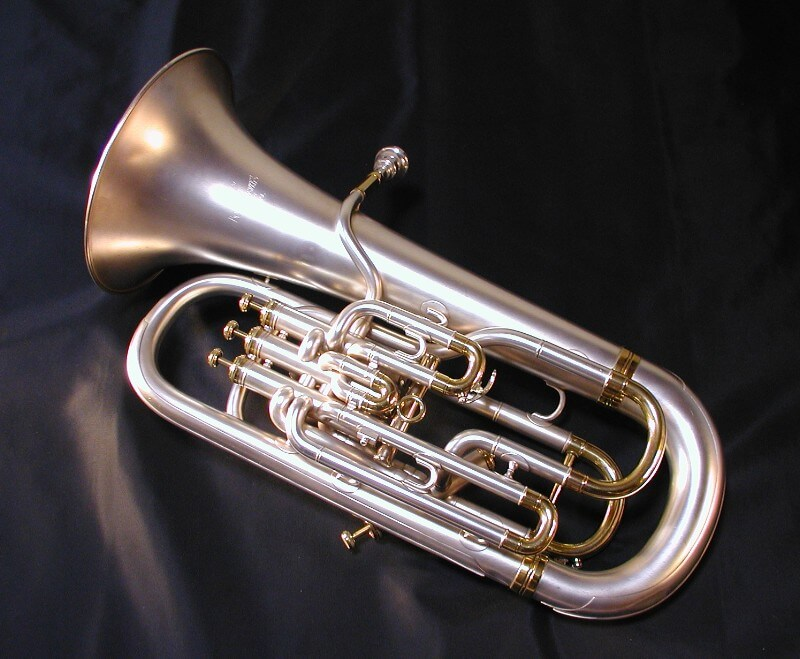

Het euphonium is een bijzonder muziekinstrument dat deel uitmaakt van de koperblazersfamilie. Met zijn zachte, warme klank en ronde vormen straalt het euphonium een elegante charme uit. Dit instrument wordt vaak vergeleken met de bariton, maar heeft een iets groter conisch buisvormig ontwerp, wat resulteert in een diepere, sonore toon. Het euphonium wordt vaak gebruikt in harmonieorkesten, brassbands en andere ensembles, waar het een cruciale rol speelt bij het creëren van rijke harmonieën en melodische lijnen. Zijn veelzijdigheid maakt het geschikt voor zowel solistische optredens als deelname aan ensemblemuziek, en het is geliefd bij muzikanten over de hele wereld vanwege zijn warme en expressieve klank. Ik speel al euphonium vanaf september 2012.

De Centrum Harmonie van Geel is een levendig en geprezen muziekensemble in het hart van Geel, België. Met een rijke geschiedenis die zich over meerdere decennia uitstrekt, is deze harmonie een hoeksteen van het lokale culturele leven, die het publiek boeit met uitzonderlijke optredens. Bestaande uit een diverse groep getalenteerde muzikanten, toont de Centrum Harmonie van Geel een breed scala aan muzikale stijlen en genres, van klassieke symfonieën tot hedendaagse composities. Hun toewijding aan muzikale excellentie en hun passie voor het creëren van prachtige melodieën zijn duidelijk in elke noot die ze spelen. Naast hun muzikale bekwaamheid zet de Centrum Harmonie van Geel zich diep in voor de gemeenschap. Ze organiseren regelmatig concerten en evenementen die mensen samenbrengen om te delen in de vreugde van muziek. Of ze nu optreden op het stadsplein op een zonnige middag of in een grote concertzaal, hun muziek resoneert zowel bij de lokale bevolking als bij bezoekers en bevordert een gevoel van eenheid en culturele verrijking. Door hun harmonieuze melodieën en onwrikbare toewijding aan de kunst van de muziek blijft de Centrum Harmonie van Geel een gekoesterde instelling, die het leven verrijkt van degenen die het geluk hebben hun harmonieuze optredens te ervaren. Hun nalatenschap als culturele ambassadeurs van Geel blijft sterk, en ze blijven nieuwe generaties muzikanten en muziekliefhebbers inspireren.
Geelse TTC, ofwel de Tafeltennisclub van Geel, is een bruisende sportvereniging die tafeltennisenthousiastelingen uit Geel en de omliggende regio samenbrengt. Met een sterke passie voor deze snelle en competitieve sport, biedt de Geelse TTC een gastvrije omgeving waar zowel beginners als ervaren spelers hun vaardigheden kunnen aanscherpen. De club bevordert niet alleen gezonde lichaamsbeweging en competitie, maar ook vriendschap en gemeenschapsgevoel. De leden delen een liefde voor tafeltennis en delen vaak tips, technieken en strategieën om elkaar te helpen groeien als spelers. Dit creëert een hechte band tussen de leden en draagt bij aan de positieve sfeer binnen de club. Naast wekelijkse trainings- en speelsessies, organiseert de Geelse TTC regelmatig toernooien en evenementen voor zowel leden als de bredere gemeenschap. Deze activiteiten zorgen voor opwinding en brengen mensen samen om de sport te vieren. Kortom, de Geelse TTC is niet alleen een plek om tafeltennis te spelen, maar ook een gemeenschap van individuen die hun passie voor de sport delen en samen streven naar verbetering, vriendschap en plezier op en naast de tafeltennistafel.


De JNM, ofwel de Jeugdbond voor Natuur en Milieu, is een bevlogen jeugdorganisatie in Nederland en België die zich inzet voor natuurbehoud, milieubewustzijn en het inspireren van jonge mensen om een diepe band met de natuur te ontwikkelen. Met haar diverse en actieve ledenbestand, organiseert de JNM educatieve activiteiten, natuurexpedities en milieuprojecten die jongeren de kans geven om de schoonheid en waarde van de natuur te ontdekken. De JNM streeft ernaar om jongeren te betrekken bij natuurstudie, ecologische bewustwording en actief natuurbeschermingswerk. Door middel van kampen, excursies en workshops krijgen leden de gelegenheid om hun kennis van planten, dieren en ecosystemen te vergroten, terwijl ze tegelijkertijd leren hoe ze onze planeet kunnen beschermen en behouden. Daarnaast biedt de JNM een gemeenschap van gelijkgestemde individuen waar vriendschappen worden gesmeed en gedeelde passies worden gekoesterd. Deze jonge natuurliefhebbers zijn vaak de toekomstige bewakers van onze planeet, en de JNM speelt een cruciale rol bij het inspireren en voorbereiden van hen voor deze verantwoordelijkheid. Kortom, de JNM is een dynamische organisatie die jongeren in Nederland de kans geeft om zich te verdiepen in de natuur, milieukwesties aan te pakken en de liefde voor onze aarde te delen met een gemeenschap van gelijkgestemde individuen. Door hun inzet dragen ze bij aan een duurzamere en bewustere toekomst voor ons milieu. Ik ben begeleiding bij de afdeling Zandland.